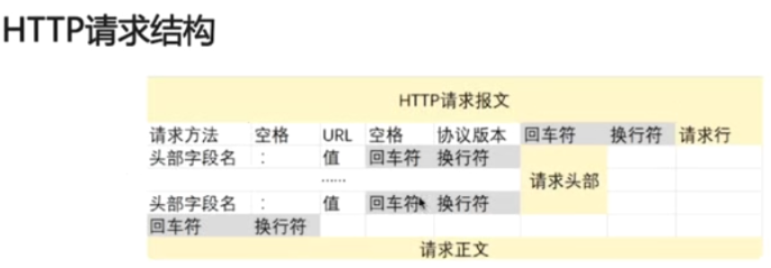
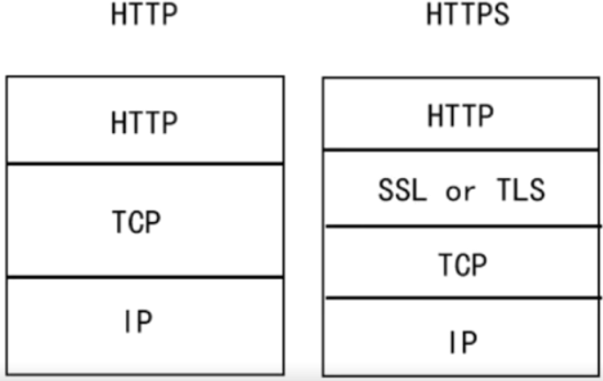

计算机网络
条评论在浏览器中输入一个网址，按下回车后，发生了什么？

- 域名解析
浏览器通过浏览器缓存、系统缓存、路由器缓存、域名服务器搜索该域名的ip地址。 - 发起TCP3次握手，建立TCP连接
拿到域名对应的IP地址之后，User-Agent（一般是指浏览器）会以一个随机端口（1024 < 端口 < 65535）向服务器的WEB程序的80端口发起TCP的连接请求。这个连接请求（原始的http请求经过TCP/IP4层模型的层层封包）到达服务器端后（这中间通过各种路由设备，局域网内除外），进入到网卡，然后是进入到内核的TCP/IP协议栈（用于识别该连接请求，解封包，一层一层的剥开），还有可能要经过Netfilter防火墙（属于内核的模块）的过滤，最终到达WEB程序，最终建立了TCP/IP的连接。
为什么HTTP协议要基于TCP来实现？
目前在Internet中所有的传输都是通过TCP/IP进行的，HTTP协议作为TCP/IP模型中应用层的协议也不例外，TCP是一个端到端的可靠的面向连接的协议，所以HTTP基于传输层TCP协议不用担心数据的传输的各种问题。 - 建立TCP连接后发起HTTP请求

- 服务器端响应http请求，浏览器得到html代码
服务器端WEB程序接收到http请求以后，就开始处理该请求，处理之后就返回给浏览器html文件。 - 浏览器解析html代码，并请求html代码中的资源
浏览器拿到html文件后，就开始解析其中的html代码，遇到js/css/image等静态资源时，就向服务器端去请求下载（会使用多线程下载，每个浏览器的线程数不一样），这个时候就用上keep-alive特性了，建立一次HTTP连接，可以请求多个资源，下载资源的顺序就是按照代码里的顺序，但是由于每个资源大小不一样，而浏览器又多线程请求请求资源，所以请求成功显示的顺序并不一定是代码里面的顺序。
浏览器在请求静态资源时（在未过期的情况下），向服务器端发起一个http请求（询问自从上一次修改时间到现在有没有对资源进行修改），如果服务器端返回304状态码（告诉浏览器服务器端没有修改），那么浏览器会直接读取本地的该资源的缓存文件。 - 浏览器对页面进行渲染呈现给用户
浏览器利用自己内部的工作机制，把请求到的静态资源和html代码进行渲染，渲染之后呈现给用户。
tcp、udp、http、https 等常用协议
HTTP与HTTPS的区别
HTTPS是具有安全性的SSL加密协议，是密文传输的，HTTP明文传输；连接方式不同，HTTPS默认使用443端口，HTTP使用80端口；HTTPS=HTTP+加密+认证+完整性保护。
1.TCP传输控制协议
- TCP是面向连接的。面向连接，三次握手建立连接，四次挥手释放连接；
- TCP提供可靠交付的服务。通过TCP连接传送的数据无差错、不丢失、不重复，并且按序到达。TCP的报文段是交给IP层(网络层)传送的，而IP层只能提供最大努力服务，网络提供的是不可靠的传输。
- 基于字节流。应用程序和TCP的交互是一次一个数据块，但TCP把应用程序交下来的数据看成是一连串的无结构的字节流。在TCP连接中传送的字节流的每一个字节都按顺序编号。
- 每一条TCP连接只能有两个端点，每一条TCP连接只能是点对点的。TCP连接的端点叫套接字(socket)。根据RFC793的定义，端口号拼接到IP地址即构成了套接字(IP地址：端口号)。每一条TCP连接唯一的被通信两端的两个套接字确定。
- 数据包都有序号，对方收到则发送ACK确认，未收到则重传
- 使用校验和来检验数据在传输过程中是否有误
- TCP首部20个字节。源端口、目的端口，序号seq，确认号ack，同步位SYN，终止位FIN，确认位ACK，检验和，窗口，……
- 因为TCP下面的网络提供的是不可靠的传输，所以TCP必须采用适当的措施使得两个运输层之间的通信变得可靠：传输信道不产生差错；不管发送方以多快的速度发送数据，接收方总是来得及处理收到的数据。
停止等待协议和连续ARQ协议。
停止等待协议能够在不可靠的传输网络上实现可靠的通信。每发送完一个分组就停止发送，等待对方的确认；在收到确认后再发送下一个分组。分组需要进行编号。若接收方收到重复分组，就丢掉该分组，但同时还要发送确认。
超时重传是指只要超过了一段时间仍然没有收到确认，就重传前面发送过的分组(认为刚才发送的分组丢失了)。因此每发送完一个分组需要设置一个超时计时器，这种自动重传方式称为自动重传请求ARQ。
连续ARQ协议可提高信道利用率。发送方维持一个发送窗口，凡位于发送窗口内的分组都可连续发送出去，而不需要等待对方的确认。接收方一般采用累积确认，对按序到达的最后一个分组发送确认，表明到这个分组为止的所有分组都已正确收到了。
socket
IP地址唯一标识一台主机，协议加端口号唯一标识主机中的一个进程

tcp 粘包与拆包
2.UDP用户数据报协议
- UDP是无连接的，发送数据之前不需要建立连接。
- UDP使用尽最大努力交付，不保证可靠交付。因此主机不需要维持复杂的连接状态表。
- UDP是面向报文的。发送方的UDP(传输层)对应用层的应用程序交下来的报文，在添加UDP数据报首部后就向下交付给IP层，UDP对应用层交下来的报文既不合并也不拆分，而是保留这些报文的边界；在接收方的UDP，对IP层交上来的UDP用户数据报，在去除首部后就原封不动地交付上层的应用进程。
- UDP没有拥塞控制。网络出现的拥塞不会使源主机的发送速率降低，吞吐量只受限于数据生成速率、传输速率以及机器性能。
- UDP支持一对一、一对多、多对一、多对多的交互通信。
- UDP的首部开销小。UDP的首部：源端口，目的端口，长度(UDP用户数据报的长度)，检验和，每个字段两个字节，一共只有8个字节。
3.HTTP超文本传输协议
客户/服务器模式。
http协议本身是无连接的，虽然http使用了TCP作为运输层协议，但通信的双方在交换http报文之前不需要先建立http连接。
http协议是无状态的。同一个客户第二次访问同一个服务器上的页面时，服务器的响应与第一次被访问时的相同。


4.HTTPS

SSL(Security Sockets Layer，安全套接层)是为网络通信提供安全及数据完整性的一种安全协议，是操作系统对外的API，SSL3.0后更名为TLS，采用身份验证和数据加密保证网络通信的安全和数据的完整性。
三次握手与四次挥手
三次握手
ACK：确认序号标志
SYN：同步序号，用于建立连接过程
FIN：finish标志，用于释放连接(只有连接释放请求报文中置1)
在TCP/IP协议中，TCP协议提供可靠的连接服务，采用三次握手建立一个连接。第一次握手，建立连接时，客户端发送SYN包(syn=x)到服务器，并进入SYN_SEND状态，等待服务器确认；第二次握手，服务器收到SYN包，必须确认客户的SYN(ack=x+1)，同时自己也发送一个SYN包(syn=y)，即SYN+ACK包，此时服务器进入SYN_RCVD状态；第三次握手，客户端收到服务器的SYN+ACK包，向服务器发送确认包ACK(ack=y+1)，此包发送完毕，客户端和服务器进入ESTABLISHED状态，完成三次握手。
四次关闭

第一次挥手：客户端发送连接释放报文，FIN=1，seq=u，客户端进入终止等待1状态。
第二次挥手：服务器对连接释放的确认，ACK=1，ack=u+1，seq=v，至此客户端进入终止等待2状态，但是服务器进入关闭等待状态，还能向客户端发送数据。
第三次挥手：服务器发送连接释放报文，FIN=1，ACK=1，ack=u+1，seq=w，因为服务器在关闭等待状态可能向客户端发送了数据，所以seq不是v，服务器进入最终确认状态。
第四次挥手：客户端对服务器发来的连接释放进行确认，ACK=1，ack=w+1，seq=u+1。服务器收到这个确认报文进入CLOSED状态，而客户端还没有关闭连接，客户端此时进入TIME_WAIT状态，需等待2MSL时间。
为什么会有TIME_WAIT状态？
TCP连接必须经过时间2MSL后才真正释放掉。1)确保A发送的最后一个确认报文段ACK能够到达B，这个报文段有可能丢失，使得LAST_ACK状态的B收不到对已发送的FIN+ACK的确认，B就会重传这个FIN+ACK报文段，而A就能在2MSL时间内收到这个重传的FIN+ACK报文段，接着A重传一次确认，重新启动2MSL计时器。如果A不等待2MSL时间，而是马上进入CLOSED状态，那么B很有可能无法正常进入CLOSED状态；2)防止已失效的连接请求报文段出现在本连接中，避免新旧连接混淆。
为什么需要四次握手才能断开连接？
因为TCP连接是全双工的，发送方和接收方都需要FIN报文和ACK报文。
流量控制拥塞控制
TCP可靠传输的实现
- 以字节为单位的滑动窗口。TCP使用滑动窗口做流量控制和乱序重排。
- 超时重传时间的选择。报文段往返时间RTT(发送一个数据包到收到相对应的ACK所花费的时间)；超时重传时间RTO(超市计时器设置的重传时间间隔)。
- 选择确认(select ACK)。
流量控制
流量控制就是让发送方的发送速率不要太快，要让接收方来得及接收。利用滑动窗口机制可以在TCP连接上实现对发送方的流量控制。发送方的发送窗口不能超过接收方给出的接收窗口的数值。TCP的窗口单位是字节，不是报文段。
拥塞控制
计算机网络中的链路容量(即带宽)、交换节点中的缓存和处理机等，都是网络的资源。在某段时间，若对网络中某一资源的需求超过了该资源所能提供的可用部分，网络的性能就要变坏，这种情况就叫做拥塞。拥塞：对资源的需求超过了可用资源。
拥塞控制防止过多的数据注入到网络中，这样就可以使网络中的路由器或链路不致过载。
TCP的拥塞控制算法：慢开始、拥塞避免、快重传、快恢复。
OSI 七层模型
物理层 数据链路层MAC 网络层IP 传输层TCP、UDP 会话层 表示层 应用层HTTP、TELNET、FTP、NFS、SMTP
ARP地址解析协议
ARP地址解析协议是根据IP地址获取物理地址的一个TCP/IP协议。
主机发送信息时将包含目标IP地址的ARP请求广播到局域网络上的所有主机，并接受返回消息，以此确定目标的物理地址；收到返回消息后将该IP地址和物理地址存入本机ARP缓存中并保留一段时间，下次请求时直接查询ARP缓存以节约资源。
地址解析协议建立在网络中各个主机互相信息的基础上的，局域网络上的主机可以自主发送ARP应答消息，其他主机收到应答报文时不会检测该报文的真实性就会将其计入本机ARP缓存。
http长连接和短链接
在HTTP/1.0中默认使用短连接。也就是说，客户端和服务器每进行一次HTTP操作，就建立一次连接，任务结束就中断连接。当客户端浏览器访问的某个HTML或其他类型的web页中包含有其他的web资源(如javaScript文件、图像文件、CSS文件等)，每遇到这样一个web资源，浏览器就会重新建立一个http会话。
而从HTTP/1.1起，默认使用长连接，用以保持连接特性。使用长连接的HTTP协议，会在响应头加入这行代码：
1 | Connection:keep-alive |
在使用长连接的情况下，当一个网页打开完成后，客户端和服务器之间用于传输HTTP数据的TCP连接不会关闭，客户端再次访问这个服务器时，会继续使用这一条已经建立的连接。Keep-Alive不会永久保持连接，它有一个保持时间，可以在不同的服务器软件(如apache)中设定这个时间。实现长连接需要客户端和服务端都支持长连接。
- HTTP协议与TCP/IP协议的关系
HTTP的长连接和短连接本质上是TCP的长连接和短连接。HTTP属于应用层协议，在传输层使用TCP协议，在网络层使用IP协议。IP协议主要解决网络路由和寻址问题，TCP协议主要解决如何在IP层之上可靠地传递数据包，使得网络上接收端收到发送端所发出的所有包，并且顺序与发送顺序一致。TCP协议是可靠的、面向连接的。 - 如何理解HTTP协议是无状态的
HTTP协议是无状态的，指的是协议对于事务处理没有记忆能力，服务器不知道客户端是什么状态。也就是说，打开一个服务器上的网页和上一次打开这个服务器上的网页之间没有任何联系。HTTP是一个无状态的面向连接的协议，无状态不代表HTTP不能保持TCP连接，更不能代表HTTP使用的是UDP协议。
http/1.0 http/1.1 http/2之间的区别
http/1.1使用了持续连接(长连接)，解决了http/1.0非持续连接(短连接)使得每请求一个文档就要有两倍RTT的开销的缺点。持续连接是万维网服务器在发送响应后仍然在一段时间内保持这条连接，使同一个客户(浏览器)和该服务器可以持续在这条连接上传送后续的http请求报文和响应报文。
http 中 get 和 post 区别
http报文层面：GET将请求信息放在URL中，POST放在报文体中。
数据库层面：GET请求符合幂等性和安全性，POST不符合。
其他：GET请求可以被缓存、被存储，而POST不行。
常见的 web 请求返回的状态码
1xx表示通知信息，如请求收到了或正在进行处理
2xx表示成功，如202接受或知道了，200正常返回信息
3xx表示重定向，如要完成请求还必须采取进一步的行动
4xx表示客户端错误，如请求中有错误的语法或不能完成
5xx表示服务器的差错，如服务器失效无法完成请求
400错误的请求；404找不到，请求的资源不存在；401请求未经授权；403服务器收到请求，但是拒绝提供服务
302临时移动；301资源永久性地转移到其他URL；
500内部服务器错误；503服务器当前不能处理客户端的请求，一段时间后可能恢复正常
HTTP是不保存状态的协议，如何保存用户状态
HTTP是一种不保存状态，即无状态(stateless)协议。也就是说HTTP协议自身不对请求和响应之间的通信状态进行保存。
那么我们如何保存用户状态呢？
Session机制的存在就是为了解决这个问题，session的主要作用就是通过服务端记录用户的状态。
典型的场景是购物车，当你要添加商品到购物车的时候，系统不知道是哪个用户操作的，因为HTTP协议是无状态的，服务端给特定的用户创建特定的session之后就可以标识这个用户并且跟踪这个用户了(一般情况下，服务器会在一定时间内保存这个session，过了时间限制，就会销毁这个session)。
- 在服务端保存session的方法很多，最常用的就是内存和数据库(使用内存数据库redis保存)。
- 既然session存放的服务器端，那么我们如何实现seesion跟踪呢？大部分情况下，我们都是通过在Cookie中附加一个Session ID的方式来跟踪。
cookie与session
Cookie和Session都是用来跟踪浏览器用户身份的会话方式，但是两者的应用场景不太一样。
- Cookie一般用来保存用户信息。比如①我们在Cookie中保存已经登录过的用户信息，下次访问网站的时候页面可以自动把你登录的一些基本信息给填了；②一般的网站都会有保持登录，也就是说下次再访问网站的时候就不需要重新登录了，这是因为用户登陆的时候我们可以存放一个Token在Cookie中，下次登录的时候只需要根据Token值来查找用户即可(为了安全考虑，重新登陆一般要将Token重写)；③登录一次网站后访问网站其他页面不需要重新登录。Session的主要作用是通过服务端记录用户的状态。比如购物车场景。
- Cookie数据存放在客户端(浏览器端)，Session数据保存在服务器端；
- Session相对于Cookie更安全，因为Session是存储在服务器的。如果使用Cookie，一些敏感信息不要写入Cookie中，最好能将Cookie信息加密然后使用到的时候再去服务端解密。
- 服务器访问增多，Session会增加服务器负担，若考虑减轻服务器负担，应使用Cookie。
cookie
在RFC6265中对Cookie进行了定义，规定万维网站点可以使用Cookie来跟踪用户。Cookie表示在HTTP服务器和客户之间传递的状态信息。
cookie是由服务器发给客户端的特殊信息，以文本的形式存放在客户端；客户端再次请求的时候，会把cookie回发；服务器接收到后，会解析cookie生成与客户端相对应的内容。
session
session机制是服务器端的机制，是在服务器上保存的信息。服务器解析客户端请求并操作session-id，按需保存状态信息。
Session是指使用HttpSession对象实现会话跟踪的技术，是一种在服务器端保持会话跟踪的解决方案。
HttpSession对象会在用户第一次访问服务器时由容器创建(注意只有访问JSP、Servlet等程序时才会创建，只访问HTML、image等静态资源不会创建)，当用户调用其失效方法(invalidate()方法)或超过其最大不活动时间时会失效。在此期间，用户与服务器之间的多次请求都属于同一个会话。
服务器在创建会话对象时，会为其分配一个唯一的会话标识——SessionID，以“JSESSIONID”的属性名保存在客户端Cookie中，在用户随后的请求中，服务器通过读取Cookie中的JSESSIONID属性值来识别不同的用户，从而实现对每个用户的会话跟踪。
session的实现方式：1.使用cookie来实现；2.使用URL回写来实现。
cookie被禁用，如何实现session
最常用的就是利用URL重写，把SessionID直接附加在URL路径的后面。
URL重写通过HttpServletResponse的encodeURL()方法和encodeRedirectURL()方法实现。
- encodeURL()方法可以对任意请求的URL进行重写。
- encodeRedirectURL()方法主要对使用sendRedirect()方法的URL进行重写。
- URL重写方法根据请求信息中是否包含“Set-Cookie”请求头来决定是否进行URL重写，若包含该请求头，会将URL原样输出；若不包含，则会将会话标识重写到URL中。
Java RMI，Socket，HttpClient
用 Java 写一个简单的静态文件的 HTTP 服务器
了解 nginx 和 apache 服务器的特性并搭建一个对应的服务器
用 Java 实现 FTP、SMTP 协议
进程间通讯的方式
管道、内存共享、信号量、消息队列
什么是 CDN？如果实现？
DNS
什么是 DNS 、记录类型: A 记录、CNAME 记录、AAAA 记录等
域名解析、根域名服务器
DNS 污染、DNS 劫持、公共 DNS：114 DNS、Google DNS、OpenDNS
反向代理
正向代理、反向代理
反向代理服务器
IO
阻塞与非阻塞
阻塞与非阻塞是线程访问某一资源时候，该资源没有准备就绪的一种处理方式。
阻塞是指当前线程会处于阻塞状态，等待该资源处理完毕，直到它响应，返回一个结果；非阻塞指这个线程直接返回一个结果，不会等待这个资源处理完毕才去响应，而是去请求其他资源。
同步与异步
同步和异步是指访问数据的一种机制。
BIO(Block IO)
BIO同步阻塞IO
NIO(Non-Block IO)
NIO同步非阻塞IO
AIO(Asynchronize IO)
AIO异步非阻塞IO